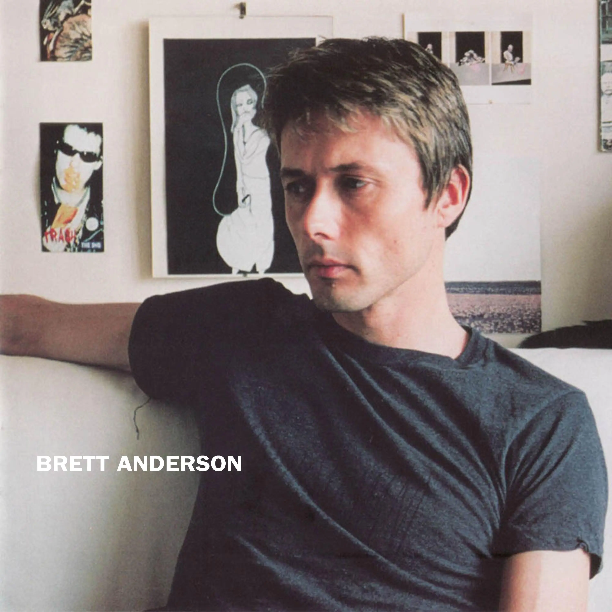

Album#44
Brett Anderson
{kind=link}

专辑信息
- 专辑名称： Brett Anderson
- 歌手： Brett Anderson
- 年份： 2007-03-26
- 时长： 38:26

在发达星期四的 Brett Anderson 的同名专辑也是你心目中的满分专辑吗？！ 里了解到的専輯。发达星期四的這個滿分専輯系列里推薦了不少専輯，歌荒了可以去翻翻看。
Brett Anderson 是 Suede 的主唱，Suede 曾經解散過，這張是在樂隊解散期間他的首張個人専輯。喜歡里面的弦樂、鋼琴、吉他、貝斯，喜歡旋律和歌詞。 Brett Anderson 的唱法、發音也蠻有辯識度的。
我是在一個剛下完雨的夜晚聴的，在樓下散步，空中還飄著一些雨丝，地上也很潮湿，専輯里的那種情緒、形成的氛圍還挺適合這樣的夜晚。
專輯大多是關於愛、失落、愛的私密的，給人一種沉醉在憂傷中的美。封面中的 Brett 皺著點眉頭，像是在憂慮著什麼。
専輯介紹
也许他对自己也有同样的体会，专辑封面他身后的 Sid Vicious 照片也点出了自己的处境：这是专属于 Brett Anderson 个人的第一步。 39岁，将届不惑之年的 Brett Anderson 首张专辑中，处处是个人生活感受的深浅刻度，就像他选择在自家录音室他常沉淀自己的角落，拍摄内页照，用很音乐的方法将部份的私密公开。
歌曲的主题依然是大家熟知的爱，失落，爱的私密，爱的失落…。
招牌歌声中那股拔高略带酸意的鼻音，不知是刻意或是被岁月的沉稳取代，已嗅不太出咨意轻狂，但依然沉溺故我。
乐器的主角由大量的钢琴弦乐取代了风骋电驰的吉他，由首波单曲 Love Is Dead 中，追随他已久的乐迷就可明显感受 Brett Anderson 作品触感的转变，专辑闭幕曲 Song For My Father 写给他刚去世的父亲，Brett 所用的文字出奇简单，但萧瑟感更是入木三分。
受过古典音乐训练的他在三拍进行的 More We Possess The Less We Own Of Ourselves以及 Colour of the Night 中，歌声倾吐轻重拍的掌控与曲式绝美结合。而 Scorpio Rising 竟令人不禁想起 Scorpions 的歌曲。作品中处处散发的洗鍊优雅，让不少文章以 Scott Walker 为例，来试图一语道破 Brett Anderson 这张他暱称为「自己的小孩」专辑，给人听觉上最大的改变。
想找到你熟悉 Brett 过往团体时期的歌曲，可以试试 Dust And Rain 或 Intimacy 等。但这是 Brett Anderson 沉潜后专属于他个人的结晶。
这就是现在的他，依然自溺，依然爱沉醉在忧伤不完全的美感中，他以最接近现在自我的方式更加成熟地呈现音乐。初嚐时淡淡的滋味，却在耳边心中回甘许久。
TRACKLIST
Love Is Dead
Nothing ever goes right
Nothing really flows in my life
No one really cares if no one ever shares my care
People push by with fear in their eyes in my life
Love is dead, love is dead
The telephone rings, but no one ever thinks to speak to me
The traffic speeds by, but no one's ever stopped too late
Intelligent friends don't care in the end, believe me
Love is dead, love is dead
And plastic people with imaginary smiles
Exchanging secrets at the back of their minds
Plastic people
Plastic people
Nothing ever goes right
Nothing really flows in my life
No one really cares if this horror's inside my head
People push by with fear in their eyes in my life
Love is dead, love is dead
Love is dead, love is dead
Love is dead, love is dead
And all the lies that you've given us
And all the things things that you said
And all the lies that you've given us…
Blow like wind in my head
歌詞大意
什麼事都不順
我生活裡沒一樣順利的
根本沒人在乎是不是有人懂我的感受
我生活裡的人們行色匆匆，眼裡透著恐懼
愛已死，愛已死了
電話響個不停，卻沒人真想跟我說說話
車流飛馳而過，但也從沒人停下來過
聰明的朋友到頭來根本不在乎，信我吧
愛已死，愛已死了
那些帶著假笑的虛偽之人
在腦子裡偷偷交換著秘密
虛偽的人
虛偽的人
什麼事都不順
我生活裡沒一樣順利的
根本沒人在乎我腦子裡是不是藏著這些恐懼
我生活裡的人們行色匆匆，眼裡透著恐懼
愛已死，愛已死了
愛已死，愛已死了
愛已死，愛已死了
還有你給我們塞的所有謊言
還有你說的那些破事
還有你給我們塞的所有謊言……
就像風一樣在我腦子裡吹過
弦樂、吉他好聴。Love is dead, heart is dead.
One Lazy Morning
Wipe the winter from your pillow
Take the cups from the machine
Vapor trails in the clear blue sky
Spell your name in Japanese
One lazy morning when life is a breeze
One lazy morning am I gonna find Jesus in me?
Does he watch me when I'm sleeping
Like a psycho on the leads?
Does he hear what I am thinking?
Does he care what I believe?
One lazy morning when life is a breeze
One lazy morning am I gonna find Jesus in me?
歌詞大意
拍掉你枕頭上的冬意
把杯子從機器裡拿出來
湛藍天空劃過的飛機雲
用日文拼出你的名字
在一個慵懶的早晨，日子輕輕鬆鬆
在一個慵懶的早晨，我能在心裡找到耶穌嗎？
我睡覺時他會盯著我看嗎
像是個屋頂上的變態一樣？
他聽得見我在想什麼嗎？
他在乎我信什麼嗎？
在一個慵懶的早晨，日子輕輕鬆鬆
在一個慵懶的早晨，我能在心裡找到耶穌嗎？
鋼琴的聲音給我的感覺是温暖的，前几句歌詞勾勒出了一個畫面，我會想到一個有很大窗户的房間，透過窗户看到湛蓝天空划过的飞机云，而 Brett 舒服地躺在床上，但他內心却不像天空那般明亮，反倒是有不少阴霾。
Dust and Rain
I tidy your wayward hair
I buy clothes you never wear
I try to kiss all your tears away
I freeze you in polaroids1
And capture your dark brown voice
I'm with you cause cause there's no choice in the end
I am the dust
You are the rain
I am the needle
And you are the vein
And this is a moment that words can't explain
I am the dust
And your love's like a overdose
With your hands wrapped around my throat
Using sex like an antidote to the pain
I am the dust
You are the rain
I am the needle
And you are the vein
And this is a moment that words can't explain
I am the dust
I am the dust
And you are the rain
And I am the needle
And you are the vein
And this is a moment that words can't explain
I am the dust
You're the rain
歌詞大意
我幫你理順亂糟糟的頭髮
我買那些你從來不穿的衣服
我試著用吻去擦乾你所有的眼淚
我把你定格在拍立得裡
捕捉你那深沉醇厚的嗓音
我跟你在一起，因為到頭來我根本沒得選
我是塵土
你是大雨
我是針管
你是靜脈
這是言語沒法解釋的一刻
我是塵土
你的愛就像是嗑藥過量
你的雙手死死掐住我的脖子
把做愛當成緩解痛苦的解藥
我是塵土
你是大雨
我是針管
你是靜脈
這是言語沒法解釋的一刻
我是塵土
我是塵土
你是大雨
我是針管
你是靜脈
這是言語沒法解釋的一刻
我是塵土
你是大雨
電吉他不錯。
Intimacy
The killer inside stares back from the mirror
Lust in his eyes, waiting for exchange
Intimacy, I want you to be part of me
Intimacy, I want you to be part of me
Sex is the card the animals are playing
Let's take it too far and eat the pain away
Intimacy, I want you to be part of me
Intimacy, I want you to be part of me
歌詞大意
心裡的殺手正從鏡子裡死盯著我
滿眼都是慾望，就等著交易
親熱點吧，我要你成為我的一部分
親熱點吧，我要你成為我的一部分
性就是這幫野獸手裡打出的底牌
不如咱們玩出格點，把痛苦全吞下肚吧
親熱點吧，我要你成為我的一部分
親熱點吧，我要你成為我的一部分
也是電吉他存在感很強的一首。
To the Winter
Called you on your private number
Left a message on your mobile phone
Even tried the operator
When I call, no one's home
Trying just so hard to reach you
Try to keep this thing alive
You are the woman I need to speak to
Didn't you know there's a monster inside
If you're gonna carry on then deep inside
I'll give my heart to the winter
If you leave I'll take this blade to carve your name into my ugliness
So I went and sat in the Crystal Palace
By the plastic dinosaurs
In my pocket was a piece of paper
And the writing look like yours
Starting picking thru' our conversations
Kicking thru' the rotten leaves
Never realize the implication
Didn't you know there's a monster in me
If you're gonna carry on then deep inside
I'll give my heart to the winter
If you leave I'll take this blade to carve your name into my ugliness
Summer's gone and there's no sun what have I done
I lost my love to the winter
Now my heart is cold and dark what have I done I've given our love away
歌詞大意
打你的私人號碼
給你的手機留言
甚至找了人工台
但我打過去時，家裡根本沒人
拼了老命想聯繫上你
想保住咱們這份感情
你就是我必須找的那個女人
你難道不知道我心裡住著個怪物嗎
你要是繼續這樣，在內心深處
我就把心交給寒冬
你要是走，我就拿這把刀，把你的名字刻進我的醜陋裡
所以我跑去坐在水晶宮裡
挨著那些塑料恐龍
兜裡揣著一張紙條
上面的字跡看著像你的
開始回味我們聊過的那些話
踢著滿地爛掉的落葉
從沒意識到那背後的深意
你難道不知道我心裡住著個怪物嗎
你要是繼續這樣，在內心深處
我就把心交給寒冬
你要是走，我就拿這把刀，把你的名字刻進我的醜陋裡
夏天沒了，也沒太陽了，我都幹了些啥
我的愛折在了寒冬裡
現在我的心又冷又黑，我都幹了些啥
我就這麼把咱們的愛葬送了
弦樂好聴，歌詞也不錯，比較喜歡的一首，失去愛情傷心後悔的人。歌曲后段的叹息聲 (Wowowo 那段) 也好聴。
Scorpio rising
There's anger in their skin
It's just a style for them
They move with murder in their vein
A cardboard filled indoors
They pass the daylight off
And kiss their innocence away
Scorpio rising
Scorpio rising
Scorpio rising
It's on the wind
Their lies are analysed
By intellectual types
Who know the depth of their disease
And love is just a game
To pass the hours away
To spend endeavours on your knees
Scorpio rising
Scorpio rising
Scorpio rising
It's on the wind
Scorpio rising
Scorpio rising
Scorpio rising
It's on the wind
It's on the wind
It's on the wind
It's on the wind
歌詞大意
他們的肌膚中透著憤怒
對他們來說這只是一種作風
他們的血管裡流淌著殺意
紙板堆滿的屋子
他們虛度白晝
吻別了他們的純真
天蠍升起
天蠍升起
天蠍升起
瀰漫在風中
他們的謊言被剖析
被那些知識分子
他們深知其病態的深淺
而愛情只是一場遊戲
用來消磨時光
讓你跪著耗盡心力
天蠍升起
天蠍升起
天蠍升起
瀰漫在風中
天蠍升起
天蠍升起
天蠍升起
瀰漫在風中
瀰漫在風中
瀰漫在風中
瀰漫在風中
吉他的旋律一下子就營造了一種冷冷的氛圍感，好聴的吉他。
Infinite Kiss
And when your clothes are on the ground
And your hair is falling down
Will you surrender to it now?
Because yes only we exist in our symphony
Of flesh in our universe of bliss
In the infinite kiss, the infinite kiss
As it subjugates you now, as it pins you
To the ground like a tethered animal
As it drags you by the hips and it forces
You to this, it is hell but in is bliss
It's the infinite kiss, the infinite kiss
As you move like a machine and the child within
You screams 'when was heaven so obscene?'
It's our playground of exess, it is poetry made
Flesh, it's our sumphony of bliss
The infinite kiss, the infinite kiss
歌詞大意
當衣服扔了一地
頭髮散落下來
現在你要乖乖投降了嗎？
因為沒錯，在我們的交響樂裡只剩彼此
肉體的交織，那是我們極樂的小宇宙
在這無盡的吻裡，無盡的吻
當這感覺征服了你，把你
像頭被拴住的野獸一樣死死按在地上
拽著你的胯，強迫你
接受這一切，這簡直是地獄，但身在其中卻爽到極點
這就是那無盡的吻，無盡的吻
當你像機器一樣動著，你內心的那個小孩
尖叫著「天堂什麼時候變得這麼下流了？」
這是我們縱慾的遊樂場，這就是化作
肉體的詩篇，這是我們極樂的交響樂
無盡的吻，無盡的吻
前奏很好聴，吉他、貝斯、弦樂交織在一起，迷人。 Brett 唱的時候那個有點拖長的 S 音，還挺性感的。也喜歡那几聲 aha 的人聲以及和聲。這首很喜歡。
Colour of the Night
My love she hides a cruel disease
It's the bullet in her mind, it's the plan
Between her knees
It's the colour of the night, it's the
Number of the beast
My love she dreams of Tel Aviv2
She's got nails in her hands and nails
In her feet
She's not from the Holy Land but she
Think she used to be
Tell me when was hell so beautiful?
Tell me with your words that disagree
Tell me with your reason carved like granite
Tell me so that I can be free
My love she's like a cruel disease
She's the bullet in my mind
She's got a plan between her knees
She's the colour of the night
She stirs the beast in me
歌詞大意
我的愛人，她藏著一種殘酷的病
那是她腦子裡的一顆子彈，是她雙膝之間
藏著的計劃
那是黑夜的顏色，是
野獸的數字
我的愛人，她夢見特拉維夫
她的雙手和雙腳
都釘著釘子
她不是來自聖地，但她
以為自己曾經是
告訴我，地獄什麼時候變得這麼美了？
用你那充滿分歧的話語告訴我吧
用你那如花崗岩般堅硬的理智告訴我吧
告訴我，這樣我就能解脫了
我的愛人，她就像一場殘酷的病
她是我腦子裡的一顆子彈
她雙膝之間藏著一個計劃
她是黑夜的顏色
她喚醒了我心中的野獸
鋼琴、弦樂、吉他都好聴，歌詞也不錯，喜歡。
The More We Possess the Less We Own of Ourselves
Baby thought she really needed that sofa
Baby thought she really wanted that dress
Baby thought she really had to have two cars
Baby thought she really had to say yes
But the more she possessed
The more she'd slide into debt
And the more she possessed
The less she owned of herself
Baby thought she really needed that hairstyle
Baby thought she really had to say yes
Baby really needed acres of carpets
Thought she'd be happy if she had larger breasts
Everybody said you can't live without them
Everybody said you have to say yes
So Baby spent her everything on this lifestyle
But it's a lifestyle that doesn't exist
And the more she possessed
The more she'd slide into debt
And the more she possessed
The less she owned of herself
Yes, the more we possess
The more we are in debt
And the more we possess
The less we own of ourselves
歌詞大意
寶貝覺得她真的需要那張沙發
寶貝覺得她真的想要那條裙子
寶貝覺得她必須得有兩部車子
寶貝覺得她真的沒法開口說不
但是她擁有的越多
她背的債就越多
她擁有的越多
真正的她自己就越少
寶貝覺得她真的需要弄那個髮型
寶貝覺得她真的沒法開口說不
寶貝真的需要鋪滿整間屋子的地毯
覺得只要胸圍再大一點她就會幸福
每個人都說沒有這些你怎麼能行
每個人都說你必須得乖乖點頭
所以寶貝把一切都砸進了這種生活方式
但這所謂的「生活方式」根本就不存在
而且她擁有的越多
她背的債就越多
她擁有的越多
真正的她自己就越少
是啊，我們擁有的越多
我們背的債就越多
我們擁有的越多
真正的我們自己就越少
像是一支三拍子舞曲，弦樂吉他好聽，Brett 的歌唱也配合著輕重拍，好聽。歌詞讓人警醒。
Ebony
Strangers just the other day
Walked right up and asked your name
Vodka in the afternoon
Drunk so much we left our food
Ebony now here we go, moving fast and moving slow
And my liver is in your hands, make me a bad man
Wandered down to Lisson Grove
It was somewhere I used to go
We saw faces in the trees
The traffic whispered 'Ebony'
Ebony now here we go, moving fast and moving slow
And my liver is in your hands, make me a bad man
I'll take you where the pigeons fly
And I'll tell you pretty lies
When nothing really makes much sense
All you need is confidence
Ebony now here we go, moving fast and moving slow
And my liver is in your hands, make me a bad man
歌詞大意
前兩天還是陌生人
直接走過去問了你的名字
下午就喝起了伏特加
喝得爛醉，連飯都沒顧上吃
艾博妮，我們出發吧，時快時慢
我的肝都交給你了，讓我變壞吧
一路晃悠到了里森格羅夫
那是我以前常去的地方
我們在樹影裡看到了人臉
車流聲中低語著「艾博妮」
艾博妮，我們出發吧，時快時慢
我的肝都交給你了，讓我變壞吧
我帶你去鴿子飛舞的地方
給你編造美麗的謊言
當一切都沒啥意義的時候，
你需要的就是自信
艾博妮，我們出發吧，時快時慢
我的肝都交給你了，讓我變壞吧
這首的吉他聴起來明亮了些，聴起來沒那麼失落低沉了。
Song for My Father
Now my body is sand
And the wind blows through me
Like the soil on your hand
I am compost and leaves
And my life has gone, darling
And now I am free
And my life has gone, darling
Like words made of sand
Like the shivering trees
And my life was a flower
And love was the leaves
But nobody saw
Any beauty in me
And my life has gone, darling
And now I am free
And my life has gone, darling
Like words made of sand
Like the shivering trees
When your life was gone, darling
And when you were free
When your life was gone, darling
Your words made of sand
So be nothing with me
Words made of sand
Just words made of sand
歌詞大意
現在我變成了沙
風穿過我的身體
就像你手裡的泥
我是化肥和落葉
親愛的，我已經走了
現在我自由了
親愛的，我已經走了
就像沙子拼成的話
就像發抖的樹
我曾經活得像朵花
愛就是那些葉子
可是沒有一個人看到
我有什麼美的
親愛的，我已經走了
現在我自由了
親愛的，我已經走了
就像沙子拼成的話
就像發抖的樹
親愛的，當初你走的時候
還有當你自由的時候
親愛的，當初你走的時候
你的話也變成了沙
所以就跟我一起什麼都別做吧
變成沙子的話
只是變成沙子的話
從父親視角寫的歌詞，像是父親和儿子告別。吉他和歌曲的旋律都很好聴。
脚注:
歌詞讓我想到了方大同的 没啥好说 ，「I framed your picture on my wall」…
Tel Aviv 指流放之地，出自 Ezekiel 3:15：
I came to the exiles who lived at Tel Aviv near the Kebar River. And there, where they were living, I sat among them for seven days—deeply distressed.
我來到迦巴魯河畔提勒亞畢的流亡者那裡。在他們所住之處，我與他們同坐了七天，心中極其憂悶。